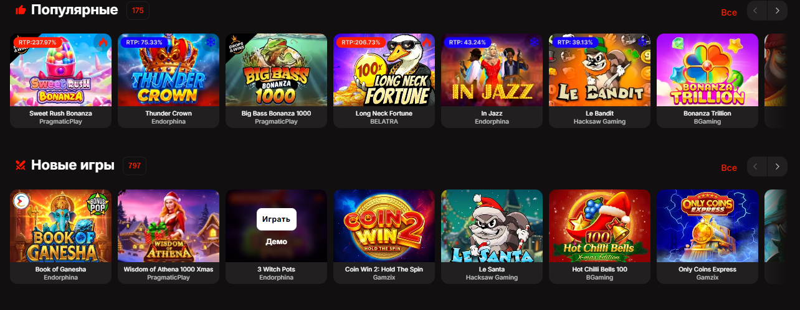

Motor Casino вход: как правильно выполнить вход в Motor Casino
Запросы «motor casino вход» и «вход в motor casino» звучат просто, но на практике именно на этапе авторизации чаще всего возникают ошибки: устаревший пароль в менеджере, путаница между похожими доменами, кеш браузера и попытки войти через подозрительную «копию» сайта. Ниже — спокойный, пошаговый разбор без лишней технической мистики.

Введение: почему «вход» — критический этап UX
Авторизация — это момент, когда пользователь пересекает границу между публичной витриной и личными данными. Если форма входа в Motor Casino оформлена понятно, пользователь быстрее попадает в нужный раздел и реже совершает ошибку. Если же форма перегружена второстепенными баннерами или ведёт на странные промежуточные редиректы, растёт число неудачных попыток и блокировок по защите. Поэтому хороший вход — это не только «логин и пароль», но и ясный контекст: вы на официальном адресе, соединение защищено, а поддержка доступна без «через знакомого».
Для SEO‑кластера важно различать намерения: кто‑то ищет «вход в motor casino» после смены телефона, кто‑то — после долгого перерыва и смены пароля. В обоих случаях полезно начать с проверки адреса по материалу официального сайта и только затем переходить к авторизации. Если основной адрес не открывается, смотрите страницу про зеркало, но не подменяйте здравый смысл срочностью.
Что это: учётная запись, сессия и устройство
Учётная запись — это связка идентификатора и пароля плюс механизмы защиты: коды, подтверждения, иногда дополнительные вопросы. Сессия — это состояние «вы внутри», которое браузер хранит ограниченное время. На практике это означает, что вход в Motor Casino может «слетать» после очистки cookies, обновления браузера или принудительного выхода на другом устройстве. Это нормально и даже полезно с точки зрения безопасности, хотя пользователю может казаться неудобным.
Устройство тоже влияет: на мобильном экране проще ошибиться в раскладке, а автокоррекция иногда портит e‑mail. Если вы часто играете с телефона, имеет смысл рассмотреть сценарий из раздела Motor Casino скачать, где описаны особенности приложения. Веб‑вход остаётся универсальным, но приложение иногда даёт более стабильную сессию в путешествиях.
Как работает корректный процесс входа
Сначала открывается проверенный адрес, затем вводятся учётные данные вручную или через менеджер паролей. После успешной проверки система перенаправляет в личный кабинет, где видны баланс, бонусы и настройки. Если включена двухфакторная защита, появляется второй шаг: это короткая пауза, которая резко снижает риск взлома при утечке пароля на другом сервисе. Если второй шаг не предлагается, но доступен в настройках, его стоит включить заранее, а не после инцидента.
Если вход не удаётся три и более раза подряд, срабатывают защитные механизмы: это может быть временная блокировка или капча. Не пытайтесь «пробить силой» — лучше используйте восстановление пароля через официальную форму и проверьте почту на предмет писем поддержки. Не переходите по ссылкам «сброса», если письмо выглядит нетипично: домен отправителя и текст должны быть согласованы с брендом. После восстановления доступа имеет смысл обновить пароль и заново проверить активные сессии в настройках профиля.
Преимущества аккуратного подхода к авторизации
Меньше блокировок
Спокойный ввод и корректный адрес снижают ложные срабатывания антибот‑защиты.
Защита от фишинга
Привычка проверять домен перед вводом пароля экономит нервы и деньги.
Предсказуемая поддержка
Если проблема типовая, её быстрее решают, когда вы описываете шаги без лишних домыслов.
Стабильная игра после входа
Когда сессия чистая, реже возникают артефакты интерфейса и ошибки платежных форм.
Как начать: мини‑инструкция на каждый день
- Откройте официальный адрес и убедитесь, что домен совпадает с ожидаемым.
- Проверьте раскладку клавиатуры и отключите лишние расширения, которые мешают формам.
- Введите логин и пароль, при необходимости пройдите второй фактор.
- После входа откройте настройки безопасности и проверьте активные сессии.
- Если планируете игру, заранее прочитайте условия бонусов на странице Motor Casino бонус.
Если вы ещё не создавали аккаунт, логичнее начать с регистрации Motor Casino, а затем вернуться к этой странице как к справочнику по ежедневному входу. Для обзора игровых режимов после авторизации откройте Motor Casino играть и выберите комфортный темп сессии.
Безопасность сессии: пароли, устройства и «чужой Wi‑Fi»
Даже идеальный пароль перестаёт быть идеальным, если его крадут через поддельную форму. Поэтому перед вводом данных всегда проверяйте домен и отсутствие визуальных аномалий в шапке сайта. На публичном Wi‑Fi лучше не использовать автосохранение пароля и не оставлять сессию открытой, даже если «только на минуту». Если вы работаете в кофейне, привыкните к коротким сессиям и полному выходу из аккаунта перед уходом.
Для домашних сценариев полезно разделить профили браузера: один — для повседневных задач, второй — для сервисов, где важна финансовая дисциплина. Это снижает риск случайной установки расширения, которое читает формы. Параллельно держите актуальную ссылку на зеркало только если она получена официально, иначе вы снова возвращаетесь к риску фишинга.
Если вы активируете бонусы сразу после входа, прочитайте условия бонусов до первой ставки: иногда промо включается автоматически при депозите, и откат назад может быть неочевидным. Спокойный вход и холодная голова в настройках экономят больше денег, чем «ускоренные методы» из сомнительных чатов.
FAQ: вход в Motor Casino и частые ситуации
Почему пароль «точно верный», но вход не проходит?
Частая причина — пробел в конце, другая раскладка, устаревшая запись в менеджере паролей или неверный домен. Проверьте адрес страницы прежде чем менять пароль.
Можно ли входить с чужого компьютера?
Только если это необходимо и безопасно. После сессии выполните выход, не сохраняйте пароль в чужом браузере и при возможности смените пароль дома.
Что делать, если просят код в мессенджер?
Это нестандартно для корректного сервиса. Не отправляйте коды третьим лицам и не переходите по сомнительным ссылкам «помощи».
Почему после входа пропал бонус?
Возможны сроки активации, смена кампании или ограничения по региону. Сверьтесь с актуальными правилами и историей аккаунта, а не с чужими скриншотами.
Нужно ли выходить после каждой сессии?
На личном устройстве часто достаточно блокировки экрана. На общем — выход обязателен.
Как понять, что меня не взломали?
Проверьте историю входов, смените пароль при малейших сомнениях, включите 2FA и обратитесь в поддержку через официальный канал.